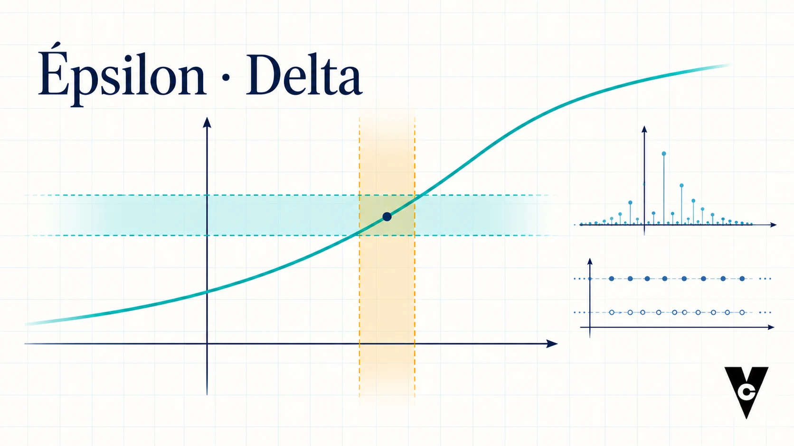
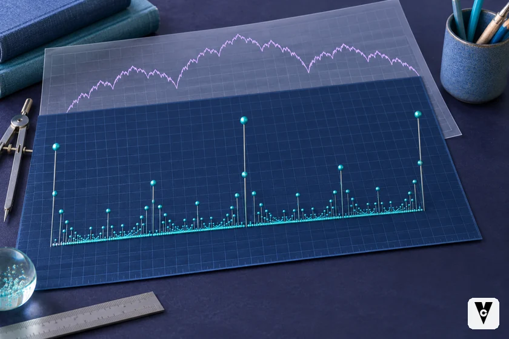
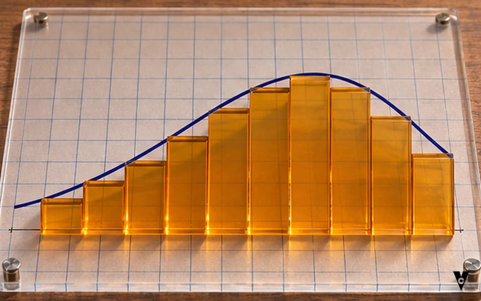
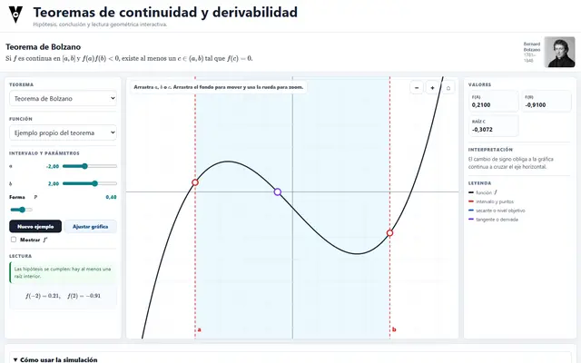
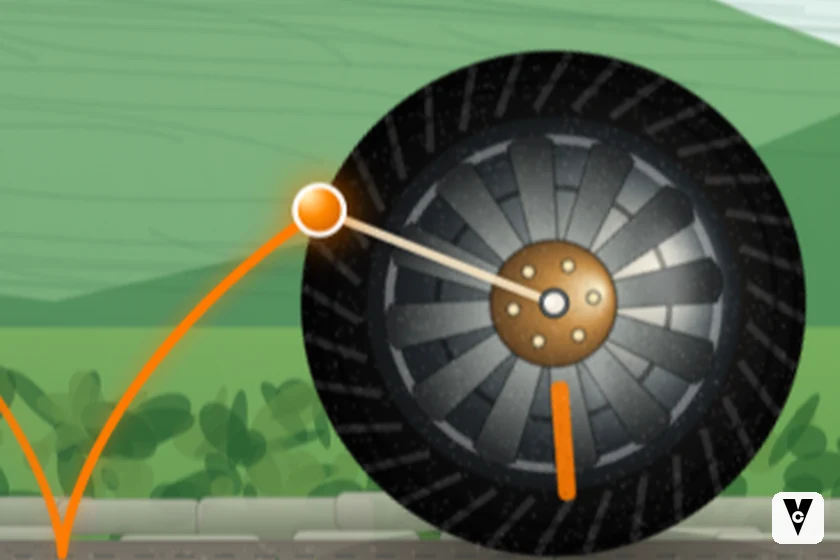
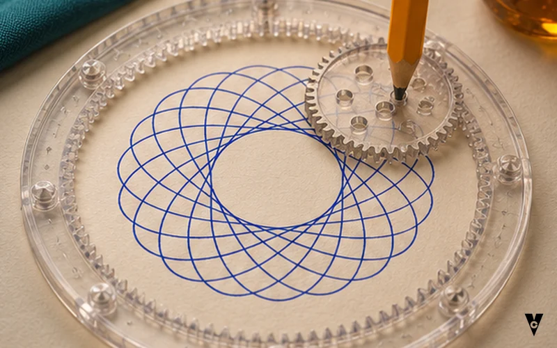

VConce · Simulaciones
VConce · SimulacionesSimulaciones de Matemáticas avanzadas
Cálculo y análisis

Límites ε–δ
Ajusta ε y δ para explorar la definición formal de límite.

Funciones patológicas
Explora ejemplos de continuidad y derivabilidad fuera de lo habitual.
Derivada generalizada (r, s)
Compara pendientes y límites al acercarte a un punto desde ambos lados.

Método exhaustivo y sumas de Riemann
Aproxima áreas y observa qué ocurre al refinar la partición.

Teoremas de continuidad y derivabilidad
Explora las hipótesis y conclusiones de los teoremas con ejemplos interactivos.
Geometría
Cono de Apolonio y cónicas
Corta el cono con un plano y observa cómo cambia la sección.
Cónicas por foco, directriz y excentricidad
Construye la curva a partir del foco, la directriz y su excentricidad.
Lugares geométricos
Mueve los puntos de una construcción y observa el lugar que trazan.
Curvas polares
Dibuja curvas al variar la distancia al origen y el ángulo.

Cicloide
Sigue un punto de una rueda que gira sin deslizar.
Epicicloides
Sigue la trayectoria de un punto cuando una circunferencia rueda por fuera de otra.

Hipotrocoides
Traza curvas con un punto unido a una circunferencia que rueda por dentro de otra.
Fractales
No hay simulaciones que coincidan con la búsqueda.